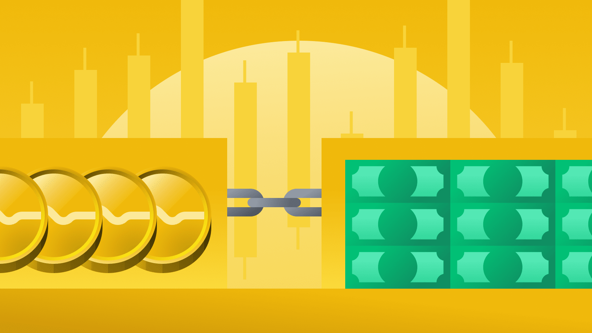

Bolsa de Valores
A bolsa de valores é o mercado organizado onde se negociam ações de sociedades de capital aberto (públicas ou privadas) e outros valores mobiliários. Pode ser organizada na forma de uma sociedade civil sem fins lucrativos, que mantém o local ou o sistema de negociação eletrônico adequado à ação de transações de compra e venda de títulos e valores mobiliários. Porém, o mais usual hoje em dia é que as bolsas de valores atuem como sociedades anônimas, visando ao lucro através de seus serviços.
O mercado de ações está em evidência, e há cada vez mais investidores interessados nele. Para muita gente, a bolsa de valores ainda pode parecer um ambiente distante e difícil de acessar. Na prática, não é nada disso. Existe uma lógica própria, mas totalmente compreensível.
Vantagens em investir em criptomoedas
Criptomoedas são ativos recentes e com uma lógica bastante sofisticada de funcionamento. Por isso, ainda há muita gente procurando entender melhor como operar com elas.
Com um Bitcoin, é possível enviar ou receber qualquer valor instantaneamente em qualquer lugar.
Atualmente, pagamentos realizados com moedas digitais são processados com taxas baixas ou até isentas. Há cobranças caso os usuários desejem ter uma confirmação mais rápida das operações pelo sistema. Para o comércio em geral, existem serviços baseados em Bitcoins em que o processamento das vendas e a transferência dos valores são realizados diariamente e com custos menores do que os dos métodos tradicionais, como PayPal ou redes de cartão de crédito.
Segundo o site Bitcoin.org, os pagamentos com Bitcoin podem ser realizados sem vincular informações pessoais do usuário à transação. “Isto oferece forte proteção contra furto de identidade”, informa. Outra vantagem é que o usuário pode proteger o dinheiro com cópias de segurança e criptografia.
Como investir em criptomoedas
Existem algumas formas de investir ou adquirir Bitcoins e outras criptomoedas. É possível comprar cotas de fundos de criptomoedas, negociá-las diretamente em uma corretora especializada (também conhecida como exchange), aceitando as moedas digitais como pagamento em algum negócio ou ainda minerando.
Adquirir cotas de fundos é uma das formas mais simples. Em 2018, a Comissão de Valores Mobiliários (CVM) permitiu que os fundos brasileiros fizessem investimentos indiretos em criptomoedas no exterior – comprando derivativos ou cotas de outros fundos, por exemplo.
Essas carteiras são distribuídas por corretoras e plataformas de investimento e alguns demandam aplicações de valor relativamente baixo (de R$ 5.000 ou até menos). Os fundos podem ser uma boa alternativa para quem quer se expor ao mercado de criptomoedas, mas não se sente seguro para fazer isso sozinho, já que quem decide e acompanha as aplicações é um gestor especializado.
Também é possível investir em criptomoedas por meio de ETFs (Exchange Traded Funds), ou seja, um fundo de investimento que é negociado na bolsa de valores como uma ação.
Tabela de Valores
| Bitcoin | 161.257,20BRL | 9,52% ↓ |
| Etherium | 11.874,69BRL | 2,42% ↑ |
| Tether | 5,1527BRL | 0,02% ↓ |
| BNB | 1.610,53BRL | 12,48% ↑ |
| XRP | 2,59782BRL | 5,22% ↓ |
| Solana | 345,388BRL | 32% ↓ |
| Dogecoin | 0,564785BRL | 78% ↑ |